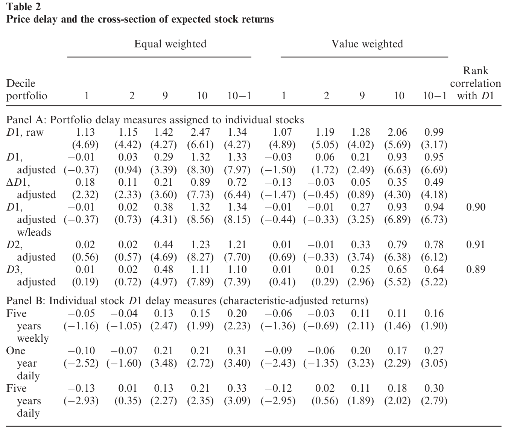
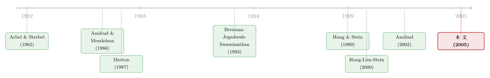

价格慢半拍的那 0.02%：一把丈量「市场摩擦」的尺子
本文读的是 Hou & Moskowitz (2005, Review of Financial Studies)：他们用「股价对信息反应的平均延迟」(price delay) 这一个数，简洁地刻画了一只股票所承受的市场摩擦严重程度。结论令人意外——延迟最严重的那批公司只占全市场市值的 0.02%，却背负着高达 每年 12% 的收益溢价；而把这块溢价撑起来的，不是传统意义上的流动性，而是 Merton (1987) 所说的「投资者认知」(investor recognition)。
1 一个绕不开的麻烦：摩擦到底有多大？
传统资产定价理论有一组很干净的假设：市场无摩擦、信息完全、投资者充分分散。可任何一个看过真实交易数据的人都知道，这些假设错得离谱——交易有成本，信息有死角，还有一大批散户根本没有分散持仓。
于是过去几十年里，研究者们一头扎进各种「摩擦」里：不完全信息 [Merton (1987)]、信息不对称 [Easley, Hvidkjaer, and O'Hara (2002)]、卖空约束 [Miller (1977)]、税收 [Constantinides (1984)]、流动性 [Amihud and Mendelson (1986)]、噪声交易者风险 [De Long et al. (1990)]……名单可以一直列下去。
但问题恰恰出在这张名单太长了。每一种摩擦都有自己的代理变量、自己的度量方式、自己的一套故事。一只股票同时被五六种摩擦缠住，你到底该用哪个数去刻画它「受摩擦折磨的程度」？这就是 Hou 和 Moskowitz 面对的张力：他们想要一个简洁(parsimonious)的、能把各种摩擦的净效果一网打尽的单一度量。
他们的答案出奇地朴素——看股价反应有多慢。
2 核心直觉：摩擦越重，价格越「慢半拍」
逻辑链条其实很短。一只没有任何摩擦的股票，市场上一有新消息，它的价格当周就调整到位；而一只被各种摩擦缠身的股票——没人盯它、买卖它要付高昂成本、信息要绕很久才传到——它的价格会拖泥带水地、分好几周才把消息消化完。
所以，价格反应的延迟，本身就是一切摩擦在价格过程上留下的「合成指纹」。你不需要分别去量信息成本、交易成本、认知程度，你只要量价格反应得有多慢，就一并把它们都捕捉了。这个想法与 Merton (1987) 的不完全信息模型、Arbel 系列的「被忽视公司」(neglected firms) 假说、以及 Hong and Stein (1999) 的渐进信息扩散模型一脉相承。
那怎么把「慢」变成一个可计算的数？
3 识别策略：用「滞后市场收益」量出延迟
这是全文的技术核心，值得一步步讲清楚。
每年 6 月底，作者对每只股票 j 跑一个回归：把它过去一年的周收益率，回归到当周以及前四周的市场组合收益上：
$$r_{j,t} = \alpha_j + \beta_j R_{m,t} + \sum_{n=1}^{4} \delta_j^{(-n)} R_{m,t-n} + \epsilon_{j,t}$$
这里 \(r_{j,t}\) 是股票 j 在第 t 周的收益，\(R_{m,t}\) 是 CRSP 市值加权市场指数的收益。直觉非常清楚：如果股价对市场消息反应及时，那么只有当期的 \(\beta_j\) 显著，四个滞后项 \(\delta_j^{(-n)}\) 应该全是零；反之，如果股价反应有延迟，那么一些 \(\delta_j^{(-n)}\) 会显著不为零——也就是说，上周的市场消息要到这周才在它身上体现。
为什么用周频而不是日频或月频？月频下大多数股票都能在一个月内反应完，几乎没有区分度；日频虽然更精细，却会引入买卖价差跳动 (bid-ask bounce)、非同步交易这些微观结构噪声。周频是个折中。而且作者特意取「周三到下周三」收盘价计周收益，以避开 Friday-to-Friday 的高自相关和 Monday-to-Monday 的低自相关问题。
有了回归系数，作者构造了三个延迟度量。最主要的是 \(D1\)，它衡量「被滞后市场收益解释掉的那部分变动占比」——即把所有滞后项约束为零后 \(R^2\) 的损失：
$$D1 = 1 - \frac{R^2_{\delta^{(-n)}=0,\ \forall n\in[1,4]}}{R^2}$$
这个数越大，说明越多的收益变动是被「上几周的市场消息」解释的，延迟也就越严重。它本质上是一个关于滞后项联合显著性的 F 检验，再用当期解释力做缩放。
由于 \(D1\) 不区分滞后的长短、也不管系数的估计精度，作者又补了两个度量。\(D2\) 用滞后阶数 n 给各滞后系数加权（越靠后的滞后，说明延迟越久，权重越大）：
$$D2 = \frac{\sum_{n=1}^{4} n\,\delta^{(-n)}}{\beta + \sum_{n=1}^{4}\delta^{(-n)}}$$
\(D3\) 则进一步用 t 值（系数除以其标准误）替换系数本身，把估计精度也纳进来：
$$D3 = \frac{\sum_{n=1}^{4} n\,\delta^{(-n)}/se(\delta^{(-n)})}{\big(\beta/se(\beta)\big) + \sum_{n=1}^{4}\delta^{(-n)}/se(\delta^{(-n)})}$$
这些度量的雏形来自 Brennan, Jegadeesh, and Swaminathan (1993) 和 Mech (1993)，他们用类似的构造去刻画股票之间的领先—滞后关系。作者还做了一堆稳健性：加入领先项、用更高阶滞后、用绝对值系数，结果几乎不变——比如 \(D1\) 与「加入领先项后的 \(D1\)」的横截面秩相关高达 0.90。
这里有个绕不过去的技术坑：周度个股回归的系数估得很不准（误差变量问题）。作者的处理是「两阶段组合延迟」(second-stage portfolio delay)——先按市值分十组，组内再按个股延迟分十组，得到 100 个 size-delay 组合，对组合重估回归(1)，再把组合的延迟值赋回组内每只股票。这相当于把个股延迟向「同规模、同延迟档」的均值收缩，大幅降低了估计噪声。但代价是：这个两阶段做法可能人为抬高规模与延迟的相关性——这一点后面会成为识别上的隐忧。
那么，被这把尺子量出来「最慢」的，是些什么公司？
4 数据与「延迟公司」的画像
样本是 1963 年 7 月到 2001 年 12 月 CRSP 上 share code 为 10/11 的全部普通股（1973 年起纳入 NASDAQ），需要 COMPUSTAT 的账面价值时按 Fama and French (1993) 定义。交易策略收益从 1964 年 7 月起算。
把股票按 \(D1\) 分成十组后，画像一目了然（见表 1，正文 Table 1）。从第 1 组到第 10 组：
- 延迟 \(D1\)：
0.002→0.341，且第 9 组到第 10 组的跳升最为剧烈； - 市值：
$18,444M→$6M——延迟最高那组公司的平均市值只有 600 万美元（1964–2001 名义美元）； - 账面市值比 BE/ME：
0.635→1.375（越延迟越「价值」）； - 机构持股比例：
52.7%→6.3%； - 分析师人数：
22.4→1.3； - 月成交额：从近 9 亿美元级别一路掉到
$370,000； - 平均股价：
$126.87→$4.89。
换句话说，延迟最严重的公司，就是那些又小、又「价值」、波动大、近期表现差、几乎没人盯、几乎没人持有的票。作者还核对了系数本身：\(D1\) 在 90 分位以上的股票，当期 \(\beta\) 只有 0.77，但滞后系数高达 0.17、0.035、0.025；而 90 分位以下的股票当期 \(\beta\) 为 1.02，滞后系数仅 0.04、0.006、0.008。延迟公司确实「反应慢」，这把尺子量准了。
记住这幅画像很关键——因为这些特征（小、价值、近期输家）每一个本身都和收益相关。下一步检验收益时，必须把它们都控制住。
5 反转：0.02% 的市场，撑起 12% 的溢价
现在到了全文最有张力的一步。延迟公司既然这么小、这么没人要，按市值加权，延迟最高的第 10 组只占整个市场市值的不到 0.02%——小到几乎可以忽略不计。
可偏偏就是这薄薄一片，扛着巨大的横截面收益差异。在控制了市场、规模、账面市值比、动量(Carhart 四因子)，又控制了 Amihud (2002) 价格冲击、Chordia, Subrahmanyam, and Anshuman (2001) 的交易活跃度等微观结构与传统流动性变量之后，延迟公司依然带着高达每年 12% 的收益溢价。这个溢价在样本的前后两半、在 1 月份、在各种设定与子样本下都稳健。

Table 2: reports the average returns of portfolios sorted on various delay
更妙的是，延迟还吞掉了「规模效应」的一部分——也就是说，小公司之所以收益更高，部分原因可能正是它们反应慢、不被注意。作者还顺手报告了几个相关发现：特质风险(idiosyncratic risk)只在延迟最高的公司里被定价；成交量溢价也主要集中在延迟股里；盈余公告后漂移 (post-earnings announcement drift) 随延迟单调递增，在非延迟公司里几乎不存在；价值溢价在延迟股里更强——但有意思的是，延迟公司并不表现出中期价格动量。
这一连串结果都指向同一个判断：这一小撮被市场遗忘的角落，是各种异象真正的「藏身之处」。（这种「一个看似全局的溢价其实只活在极小一块市场角落」的味道，和《显著性异象的「微缩」真相》讲的故事如出一辙。）
6 真正关键的一步：是流动性，还是「没人认识你」？
到这里，一个自然的问题是：延迟溢价到底是什么的补偿？最顺手的答案当然是「流动性」——延迟公司不好交易，溢价是流动性补偿。但作者偏要把这个最顺手的答案按住，做一次正面较量。
他们一边放上传统流动性代理：成交量、换手率、价格、交易天数、买卖价差，以及 Amihud (2002) 的价格冲击和交易成本度量；另一边放上投资者认知代理：分析师覆盖、机构持股、股东人数、员工人数、广告支出，乃至「偏远程度」（到机场的平均机票价格与距离）。
结果是一边倒的：
- 传统流动性代理既不能吸收延迟效应，也不能在有延迟在场时捕捉显著的横截面收益预测力；延迟溢价与 Pastor and Stambaugh (2003) 的总量流动性风险因子之间也几乎没有关系。
- 反过来，投资者认知代理却能解释掉延迟的预测力，即便在控制一大批流动性与规模变量之后依然如此。
于是作者的解读是：延迟溢价关乎公司是否被认知、是否被忽视，而非传统流动性。Merton (1987) 的逻辑在这里特别贴切——当一家公司被市场的大部分人忽略、与市场其余部分相隔离时，残差波动率（而非与市场的协方差）才是更恰当的风险度量，因为风险没有被有效地分摊出去。这恰好解释了「为什么特质风险偏偏只在延迟最高的公司里被定价」。
而信息不对称与情绪风险这两条线，作者都找不到支持：延迟溢价与 Easley, Hvidkjaer, and O'Hara (2002) 的知情交易风险度量没有关系；与高成长、动量股也关系甚微，因此也不像是 Barberis, Shleifer, and Vishny (1998) 意义上的噪声交易者风险。
最后还有一记诚实的回马枪：既然延迟溢价恰恰盘踞在小、不流动、价值、近期输家、低机构持股、高特质风险的股票里，那么想真正套出这块收益，难度极大。正如 Merton (1987) 与 Shleifer and Vishny (1997) 所言，正是这些「套利的障碍」让这类现象得以在市场中长期存在。换句话说：溢价是真的，但它是「看得见、吃不到」的那种。
7 文献脉络
这条研究线大致是这样长出来的。早期有两股力量并行：一是 Arbel and Strebel (1982)、Arbel, Carvell, and Strebel (1983) 提出的「被忽视公司」与小公司效应——制度性力量和交易成本会让不显眼的、被分割的公司延迟吸收信息；二是 Amihud and Mendelson (1986) 开创的流动性与买卖价差定价。理论上，Merton (1987) 给出了那个影响深远的不完全信息/投资者认知模型，奠定了「被谁认识」会进入定价的逻辑基础。
方法上的关键铺垫来自 Brennan, Jegadeesh, and Swaminathan (1993) 与 Mech (1993)，他们用滞后回归刻画股票间的领先—滞后关系；Hong and Stein (1999) 则给出渐进信息扩散的统一理论，Hong, Lim, and Stein (2000) 进一步用「分析师覆盖低 → 坏消息传得慢」解释动量。Amihud (2002) 又把价格冲击度量推到了前台。
本文 (Hou and Moskowitz, 2005) 站在这些工作的交汇处：它不去单独度量某一种摩擦，而是用价格延迟这一个数把它们的净效果打包，再用一场流动性 vs. 投资者认知的「对质」，把延迟溢价的来源钉在了「认知/忽视」上。（作者之一 Hou 同期的 Hou (2005) 把同样的延迟思想用到了行业层面的信息扩散，见《大公司先动，小公司后知》。）

8 评论与延伸（Q&A + 研究方向）
(a) 几个可能的疑问
Q：「价格延迟」和「不流动」到底有什么区别？两者听上去几乎是一回事。
度量上确实高度相关——表 1 里 Amihud 不流动性与延迟的秩相关高达
0.96。但作者的关键论证是「条件性」的：在同时放入两类代理做横截面竞赛时，传统流动性度量吸收不了延迟，反而是认知类变量(分析师、机构、股东人数)能吸收延迟。作者自己也承认一种折中解读：延迟或许识别出了「流动性中真正被定价的那一部分」，而这部分恰好与投资者认知有关。两种解读对横截面预测力的含义是一致的。
Q：那个「两阶段组合延迟」会不会是在自己制造结果？它人为抬高了规模和延迟的相关。
这是最值得警惕的一点，作者也意识到了。为此他们补做了「一阶段个股延迟 + 对规模正交化」，并用最多五年的周数据、以及日频数据来提高个股延迟的估计精度。结论是：个股延迟产生的结果比组合延迟更弱但同向。所以核心结论不依赖两阶段做法，只是组合法更干净、信噪比更高。
Q：既然延迟公司这么小、占市值不到 0.02%，这个「12% 溢价」是不是只是小盘股流动性噪声，没什么经济意义？
恰恰相反，作者想强调的正是「小而重要」。市值占比微不足道，却贡献了大量横截面收益变异，这本身就说明摩擦在边际上极其重要。当然这也带来一个诚实的限制：等权重下效应才最强，真要交易这批又小又不流动的票，成本会吃掉大部分账面溢价。
Q：为什么延迟公司有价值溢价、有盈余漂移，却偏偏没有动量？
这是个反直觉但很有意思的事实。如果延迟纯粹是「坏消息传得慢」(Hong-Lim-Stein 式动量)，那延迟股本该动量很强。作者发现延迟股没有中期动量，反而削弱了「延迟=噪声交易者情绪」的解释——因为近期理论把情绪与成长、动量联系在一起。这把延迟更往「认知/忽视」而非「行为性反应不足」的方向推。
Q：用市场收益当「信息」，会不会漏掉公司层面的特质信息延迟？
会，但这是有意的取舍。作者只用对市场收益的滞后反应，是为了避免个股自身收益滞后带来的解释难题——Lo and MacKinlay (1990) 指出，由于强烈的序列交叉相关，组合收益正自相关而个股收益负自相关。只看对市场的反应，让延迟度量的解释干净得多。代价是它度量的是「系统性信息」的延迟，而非全部信息。
Q：1 月效应、规模效应这些老对手，会不会把延迟溢价解释掉？
作者专门检验了 1 月份与前后两半子样本，延迟溢价依然稳健；而且方向是延迟吞掉了部分规模效应，而非被规模吞掉。这意味着延迟在某种意义上比规模更「根本」——小公司高收益的一部分，可以被「它们反应慢」重新表述。
(b) 几个可能的研究问题与提案
1. 把「价格延迟」搬到公司债市场。 【经济故事】股票里延迟溢价由「投资者认知」驱动；公司债的投资者结构更集中、交易更稀疏、被覆盖程度差异更大，认知摩擦理应更突出。一只很少被交易、很少被卖方覆盖的债券，其价格对系统性信用消息（如信用利差指数、国债收益）的反应可能严重滞后。 【可行性】中。可用 TRACE 成交数据构造债券层面的延迟度量（对信用因子收益的滞后反应），难点在于债券交易稀疏导致回归噪声极大，需要像本文那样做组合层面收缩。识别上可借鉴本文的认知 vs. 流动性对质（评级覆盖、做市商数量 vs. 价差、Amihud）。
2. 外资持有人是「加速器」还是「减速器」？ 【经济故事】外资进入往往伴随分析师覆盖上升、信息环境改善，按本文逻辑应当降低价格延迟、压缩延迟溢价；但外资也可能信息劣势、反应更慢。用「可投资度」开放作为冲击，可以检验外资究竟让价格反应变快还是变慢。 【可行性】高。已有大量国别层面的「可投资度」(investability) 自然实验数据，配合本文的延迟度量即可做事件研究/DiD。这与《外资来了，全球新闻就传得更快吗？》是直接的对话对象。
3. 延迟溢价是否随「被动投资份额」上升而衰减？ 【经济故事】本文的认知机制依赖「有多少人真正在盯这只股票」。过去二十年指数化和被动持有大幅扩张，理论上提升了边缘公司的「被持有」广度，可能侵蚀延迟溢价；但被动资金「不研究、只持有」，也可能让信息反应更慢。两种力量方向相反。 【可行性】中。需要长样本的被动持股份额数据（且口径有争议，可参见《被动投资份额其实是你以为的两倍》），用延迟度量做时间序列上的溢价衰减检验。识别偏弱，更适合做描述性证据 + 横截面异质性。
4. 用文本/另类数据直接度量「投资者认知」。 【经济故事】本文的认知代理（分析师、机构、广告、机票距离）都是间接的。如今可以用新闻提及频率、社交媒体关注、零售下单覆盖度等直接度量「有多少人在看这家公司」，从而把「认知 → 延迟 → 溢价」这条链条的中间环节钉得更死。 【可行性】高。新闻与社媒数据已较易获得；可做中介分析：认知度量是否解释了延迟，延迟是否仍解释收益。诚实地说，因果识别仍是难点（认知与延迟可能同时被某个遗漏因素驱动），更适合作为机制证据而非因果声明。
9 参考文献与我的判断
我认为这篇文章最大的贡献是方法论上的简洁：它没有再往本就臃肿的「摩擦动物园」里添一个新变量，而是用一个可计算的、对市场收益滞后反应的回归，把所有摩擦的净效果压缩成一个数，然后用一场设计巧妙的「流动性 vs. 认知」对质，给这块溢价找到了一个可信的经济来源。「0.02% 的市值 / 12% 的溢价」这组对比，本身就是对「摩擦在边际上极其重要」最有力的修辞。
我对识别的主要担忧有两点。其一是两阶段组合延迟与规模的纠缠——作者用一阶段正交化做了缓解，但既然延迟与规模、不流动性的相关都在 0.9 以上，「延迟吞掉了规模效应」与「规模换了个名字叫延迟」在统计上很难被彻底区分，结论更多是「重新表述」而非「证伪」。其二是认知代理的内生性：分析师覆盖、机构持股本身就是公司特征的均衡结果，「认知解释延迟」可能部分是同源变量的共线，而非真正的机制识别。
后续我最想看到的，是把这套延迟度量放到一个有外生认知冲击的环境里去检验——比如交易所上市/退市、指数纳入、可投资度开放、某券商研究部门关闭——看延迟与其溢价是否随「被看见的程度」而真实地、因果地移动。那将把本文从一个漂亮的横截面相关性，推向一个干净的因果故事。
参考文献
- Amihud, Y. (2002). Illiquidity and Stock Returns: Cross-Section and Time Series Effects. Journal of Financial Markets 5, 31–56.
- Amihud, Y., and H. Mendelson (1986). Asset Pricing and the Bid-Ask Spread. Journal of Financial Economics 17, 223–249.
- Arbel, A., and P. Strebel (1982). The Neglected and Small Firm Effects. Financial Review 17, 201–218.
- Barberis, N., A. Shleifer, and R. W. Vishny (1998). A Model of Investor Sentiment. Journal of Financial Economics 49, 307–343.
- Brennan, M. J., N. Jegadeesh, and B. Swaminathan (1993). Investment Analysis and the Adjustment of Stock Prices to Common Information. Review of Financial Studies 6, 799–824.
- Chordia, T., A. Subrahmanyam, and V. Anshuman (2001). Trading Activity and Expected Stock Returns. Journal of Financial Economics 59, 3–32.
- Easley, D., S. Hvidkjaer, and M. O'Hara (2002). Is Information Risk a Determinant of Asset Returns? Journal of Finance 57, 2185–2221.
- Fama, E. F., and K. R. French (1993). Common Risk Factors in the Returns on Stocks and Bonds. Journal of Financial Economics 33, 3–56.
- Hong, H., T. Lim, and J. C. Stein (2000). Bad News Travels Slowly: Size, Analyst Coverage, and the Profitability of Momentum Strategies. Journal of Finance 55, 265–296.
- Hong, H., and J. C. Stein (1999). A Unified Theory of Underreaction, Momentum Trading and Overreaction in Asset Markets. Journal of Finance 54, 2143–2184.
- Hou, K. (2005). Industry Information Diffusion and the Lead-Lag Effect in Stock Returns. Working paper, Ohio State University.
- Hou, K., and T. J. Moskowitz (2005). Market Frictions, Price Delay, and the Cross-Section of Expected Returns. Review of Financial Studies 18(3), 981–1020.
- Mech, T. S. (1993). Portfolio Return Autocorrelation. Journal of Financial Economics 34, 307–344.
- Merton, R. C. (1987). A Simple Model of Capital Market Equilibrium with Incomplete Information. Journal of Finance 42, 483–510.
- Pastor, L., and R. Stambaugh (2003). Liquidity Risk and Expected Stock Returns. Journal of Political Economy 111, 642–685.
- Shleifer, A., and R. W. Vishny (1997). The Limits of Arbitrage. Journal of Finance 52, 35–55.